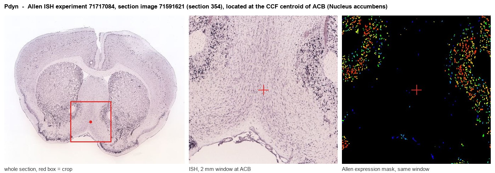
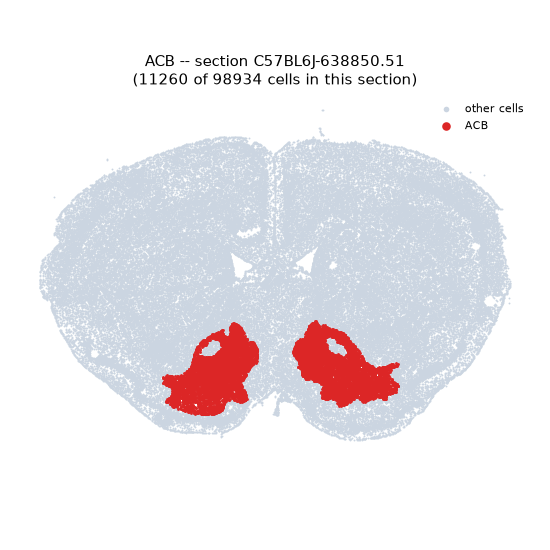
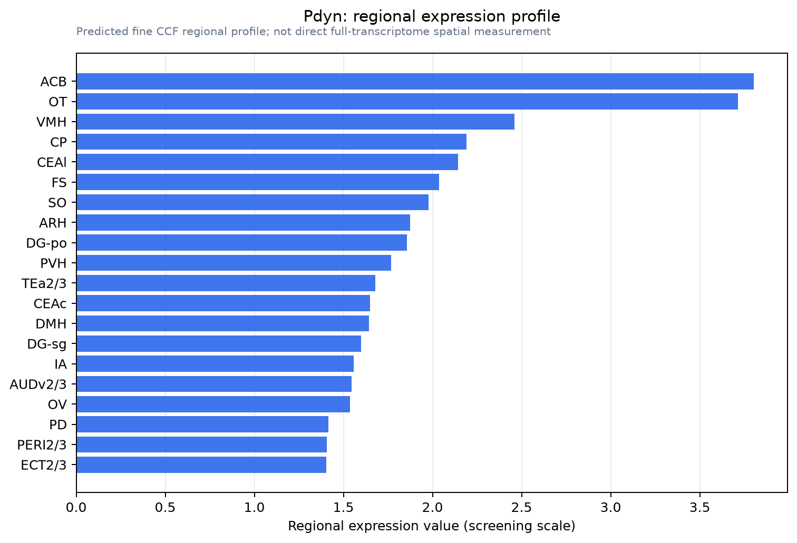

Pdyn
Spatial tier: REGION_BIASED · Class: NEUROMODULATORY_SIGNAL · Top region: ACB (Nucleus accumbens) · Positive regions: 35/554
44.6Discovery Score
41.7Targetability Score
CEvidence grade C
What this means: Pdyn: fine CCF profile is region-biased toward ACB (top regions: ACB, OT, VMH, CP, CEAl); this is a discovery lead, not direct proof.
Function in ACB: evidence, prediction, innovation
- Gene function
- Pdyn encodes prodynorphin, the precursor of dynorphin A, dynorphin B and alpha-neoendorphin, the endogenous agonists of the Gi-coupled kappa-opioid receptor. Dynorphin/KOR signalling inhibits adenylate cyclase, opens GIRK channels and closes calcium channels, suppressing transmitter release; behaviourally it generally produces dysphoria, stress reactivity and spinal analgesia.
- Region function
- The nucleus accumbens is the ventral striatal hub of reward and motivation; its D1- and D2-receptor medium spiny neurons integrate dopaminergic input from VTA with glutamate from prefrontal cortex, amygdala and hippocampus to drive approach, avoidance and reinforcement learning.
- Published in this region
- direct Direct. Pdyn marks a subset of accumbens medium spiny neurons, and Al-Hasani 2015 used Pdyn-Cre optogenetics to show that dynorphin neurons in the ventral and dorsal nucleus accumbens shell drive opposite behaviours, aversion versus reward, depending on subregion. Chronic morphine and ethanol withdrawal up-regulate accumbens prodynorphin (Przewłocka 1996), strain differences in accumbens dynorphin and KOR content track differences in drug responding (Jamensky 1997), and Palmisano 2019 linked corticostriatal dynorphin to the negative affective component of neuropathic pain.
- Predicted function
- Prediction: the remaining work is to resolve the subregional logic. Local Pdyn deletion or KOR blockade in dorsal versus ventral shell is predicted to shift the balance of approach and avoidance in opposite directions, and to reduce selectively the negative-affect component of opioid withdrawal and neuropathic pain without altering baseline reward. Specifically, norBNI or JDTic microinjected into ventral shell should be anti-aversive and anxiolytic, whereas the same drug in dorsal shell should reduce reward and motivation.
- Innovation
- ★☆☆☆☆ 1/5 Accumbens dynorphin is a mature, intensively worked field with dedicated Cre lines and selective antagonists.
- Tools
- Pdyn-IRES-Cre (JAX 027958), Pdyn-Cre BAC (GENSAT) and Pdyn knockout mice, plus Oprk1-Cre and Oprk1 knockout lines; KOR antagonists norBNI, JDTic and aticaprant and agonists U50,488 and U69,593; anti-dynorphin antibodies; the kLight sensor for dynorphin release imaging.
- References
Direct evidence located at the region

Allen ISH experiment 71717084, section image 71591621 (section 354): the section that contains the CCF centroid of Nucleus accumbens according to the Allen image-to-atlas alignment (reference_to_image), with a 2 mm window around that point. Left: whole section, red box = window. Middle: ISH signal. Right: Allen's expression-mask view of the same window. open this image in the Allen viewer
Look it up yourself: Allen Mouse Brain ISH for PdynAllen reference atlas: ACB (structure 56)ABC Atlas MERFISH viewer(in the ABC Atlas choose dataset MERFISH-C57BL6J-638850-CCF, colour cells by gene "Pdyn" or by parcellation_substructure "ACB")All genes confined to ACB + 3-D brain
Direct spatial evidence
MERFISH REGION LOCATOR

Regional expression figure

Predicted WMB × fine-CCF profile; not direct full-transcriptome spatial measurement.
Spatial profile
Evidence and specificity
- Evidence status
- PREDICTED_FINE
- Direct sources
- None; predicted localization only
- Exclusive threshold
- 12 positive regions out of 554
- Spatial specificity
- 0.310
- Top-region fraction
- 0.052
- Filter status
- PASS
Interpretation limits
- Cell-type-to-region projection is imputed expression, not direct spatial measurement.
- Adult reference atlases do not establish stability across age, sex, strain, state, or disease.
- Transcript abundance does not guarantee protein abundance or genetic-tool performance.